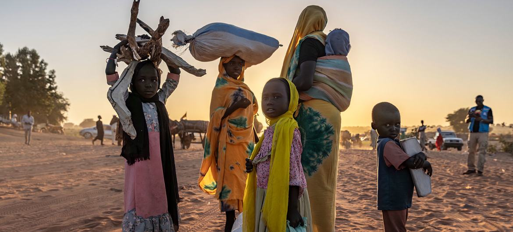
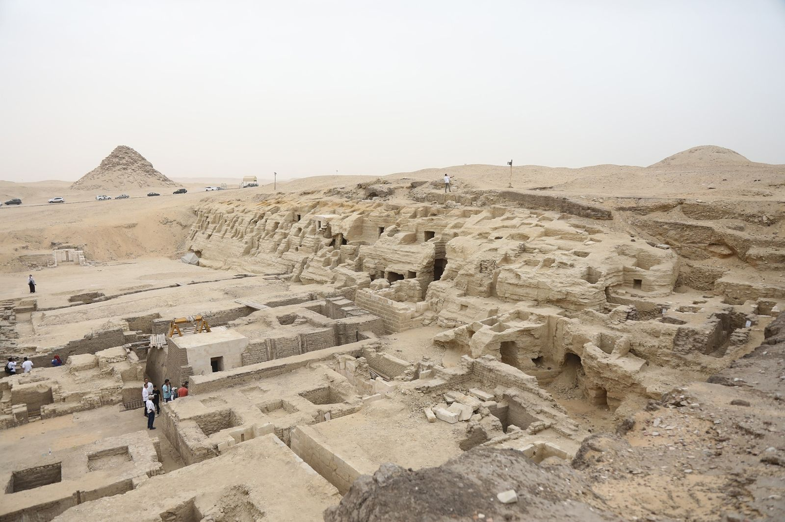

En una histórica cumbre celebrada en Ginebra, líderes mundiales se reunieron para discutir estrategias
conjuntas
para combatir el cambio climático. La conferencia, que contó con la participación de más de 100 países,
destacó la importancia de la cooperación internacional para abordar los desafíos ambientales que
enfrenta
el planeta.
Durante la cumbre, se presentaron nuevos compromisos para reducir las emisiones de gases de efecto
invernadero,
promover energías renovables y proteger los ecosistemas vulnerables. Los líderes también acordaron
aumentar
la financiación para proyectos de adaptación al cambio climático en países en desarrollo.
Expertos en medio ambiente y activistas aplaudieron los avances logrados durante la cumbre, pero también
instaron a los gobiernos a cumplir con sus compromisos y acelerar las acciones para limitar el
calentamiento
global a 1.5 grados Celsius por encima de los niveles preindustriales.
La cumbre concluyó con un llamado a la acción global, enfatizando que el tiempo para actuar es ahora y
que
solo a través de esfuerzos conjuntos se podrá garantizar un futuro sostenible para las generaciones
venideras.
Avances en la exploración espacial: Misión a Marte revela nuevos hallazgos
La misión espacial más ambiciosa hasta la fecha ha arrojado nuevos hallazgos sobre el planeta Marte,
proporcionando
información valiosa sobre su geología, clima y potencial para albergar vida en el pasado.
Los datos recopilados por el rover explorador han revelado la presencia de antiguos lechos de ríos y
minerales
que sugieren que Marte tuvo condiciones favorables para la vida hace miles de millones de años. Los
científicos
están analizando muestras de suelo y rocas para comprender mejor la historia del planeta rojo y su
evolución
a lo largo del tiempo.
Además, la misión ha proporcionado información crucial sobre la atmósfera marciana, incluyendo la
detección
de gases traza que podrían indicar procesos geológicos activos. Estos hallazgos abren nuevas
posibilidades
para futuras misiones tripuladas y la exploración continua del sistema solar.
La comunidad científica internacional celebra estos avances como un paso significativo hacia la
comprensión
del universo y la búsqueda de vida más allá de la Tierra.
Crisis humanitaria en aumento: Organizaciones internacionales llaman a la acción urgente
La crisis humanitaria en varias regiones del mundo ha alcanzado niveles alarmantes, con millones de
personas
enfrentando desplazamiento, inseguridad alimentaria y falta de acceso a servicios básicos.
Organizaciones
internacionales
están haciendo un llamado urgente a la comunidad global para intensificar los esfuerzos de ayuda y
asistencia.

Conflictos armados, desastres naturales y crisis económicas han contribuido a la creciente necesidad de
ayuda
humanitaria. Las agencias de ayuda están trabajando incansablemente para proporcionar alimentos, agua,
refugio
y atención médica a las poblaciones afectadas, pero los recursos son limitados y la demanda sigue
aumentando.
Los líderes mundiales están siendo instados a aumentar la financiación para programas de ayuda y a
implementar
políticas que aborden las causas subyacentes de estas crisis. La cooperación internacional y el apoyo
sostenido
son esenciales para aliviar el sufrimiento de las comunidades vulnerables y construir un futuro más
resiliente.
La situación requiere una respuesta inmediata y coordinada para garantizar que las necesidades básicas de
las
personas afectadas sean atendidas de manera efectiva.
Descubrimiento arqueológico revela secretos de civilizaciones antiguas
Un equipo de arqueólogos ha realizado un descubrimiento significativo en una zona remota del país,
revelando
restos de una antigua civilización que datan de varios siglos atrás. Los hallazgos incluyen estructuras
arquitectónicas, artefactos y pinturas rupestres que ofrecen una visión única de la vida y la cultura
de
estas sociedades antiguas.

Los expertos están emocionados por las implicaciones de este descubrimiento, ya que proporciona nueva
información
sobre las prácticas sociales, religiosas y económicas de las civilizaciones que habitaron la región.
Se
espera
que estos hallazgos contribuyan significativamente al conocimiento histórico y arqueológico, y se
planean
futuras excavaciones para explorar más a fondo el sitio.
El descubrimiento ha capturado la atención tanto de la comunidad científica como del público en general,
destacando
la importancia de preservar y estudiar el patrimonio cultural para comprender mejor nuestro pasado
colectivo.